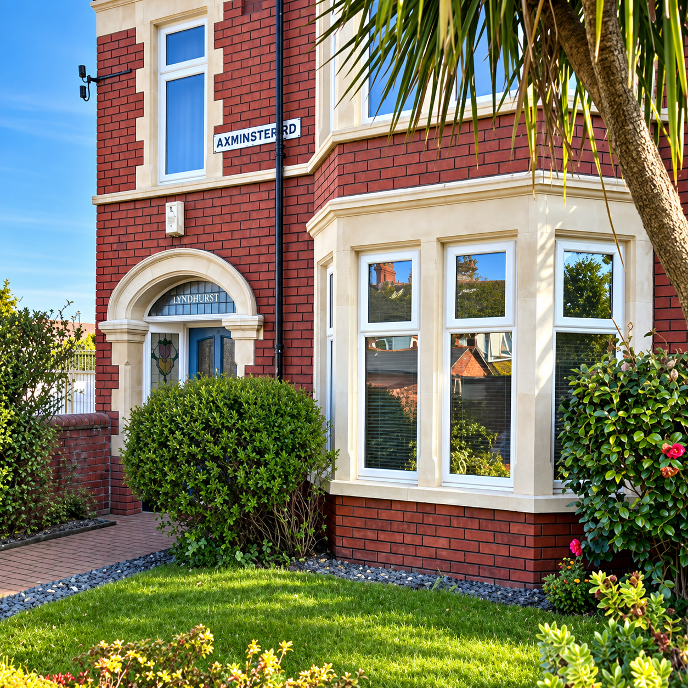
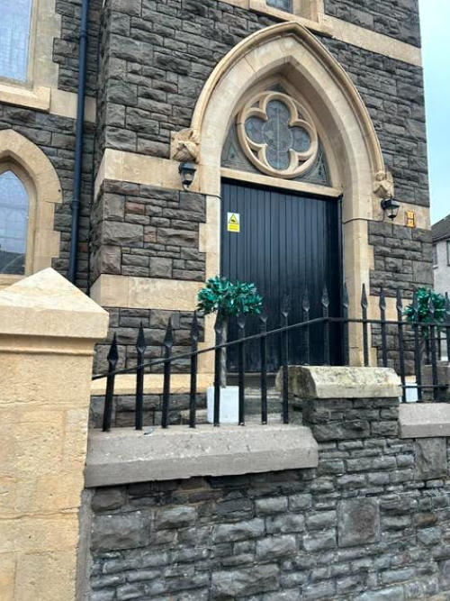
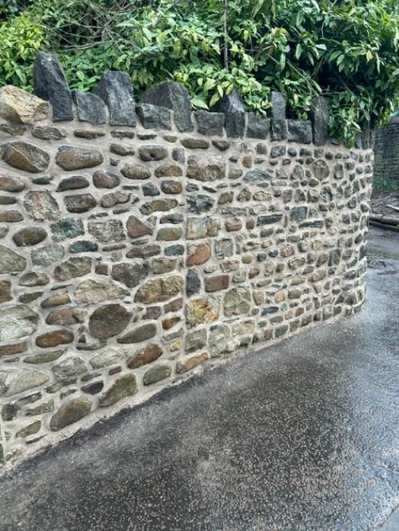
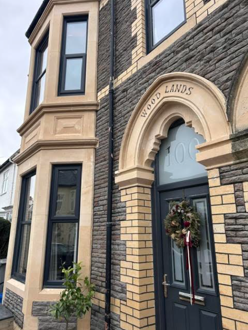

Expert Stone Masonry
& Restoration
Bringing your property back to life, with over 25 years of experience in stone cleaning, restoration and repointing across South Wales.
Get a Free Quote
Elevating Your Home's Structural potential
We offer stone cleaning and restoration as well as repointing both brickwork and stone. We consider ourselves to be experts at making your property striking. If you're ready for your home to reach its full potential, just give us a call!
Recent Masonry Projects
Explore the full gallery for more restoration, repointing, and stonework examples across South Wales.

Church Restoration

Rebuilt Chimney Stack

Repaired Traditional Stone Wall

Restored Arched Entrance

Wood Lands House Restoration

Explore More Photos
Restoration Before & Afters


Weathered Coping
Newly Dressed Stonework
Gable Coping Repair


Before
Cleaned & Repointed
Brickwork Restoring
What Our Clients Say
We're very pleased with the work carried out and would highly recommend City Stone Masonry. Andrew started and finished the job on schedule and worked hard and diligently to complete the work to a very high standard. The quality of the finish surpassed expectations with the front of our property now completely transformed. Andrew really is a master of his craft and as such provides first class service. Many thanks!
Absolutely fantastic service, really highly recommended! A+++
Thanks so much for your work with Curtis on our house. It looks fab!
Thank you so much for sorting the front, looks so much better!
Thanks for yours and Curtis' efforts, Andy
House looks proper smart. Thank you. We are so very pleased.
Thanks, Andy. You're a miracle worker
The house is looking so much better
Thanks very much for sorting the stone - it looks great!
Thanks for the work it looks great
Perfect mate!
Thank you so much for the great job you did on my front!
Andrew, you are a star. Thanks very much. I owe you a pint or two!
Ready to transform your property?
Get in touch today for expert stone cleaning, masonry, and repointing in South Wales.